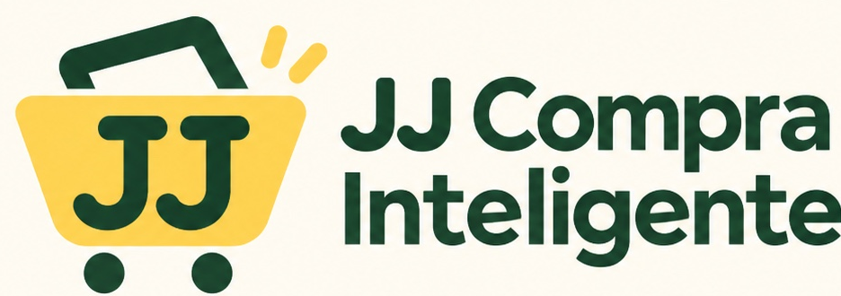

JJ Compra Inteligente · Revisión técnica de marca
El original, a cada escala.
Lámina aislada para revisar el recurso aprobado. Se muestra el mismo archivo, sin redibujar, recortar, recolorear ni aplicar efectos.
Recurso existente
Logotipo horizontal oficial
PNG RGB de 936 × 330 px. El fondo crema forma parte de la imagen; este archivo no tiene transparencia.

Esta lámina no presenta un isotipo, un icono de aplicación, un vector ni una nueva versión de la marca.
Ancho del logotipo completo
Seis tamaños de revisión
La proporción original se mantiene en cada muestra. Las etiquetas externas permiten identificar la marca incluso cuando el texto del raster es demasiado pequeño para leerse.
La firma completa no ofrece lectura suficiente a esta escala. No equivale a un icono aprobado.
Revisar el nombre y las iniciales por separado. Un recurso pequeño necesita su propia aprobación.
Comprobar lectura a distancia de uso normal, sin confundir ampliar la pantalla con legibilidad real.
Revisar el nombre completo, el espacio entre símbolo y firma y los dos destellos.
Referencia intermedia para cabecera o presentación. Se conserva el fondo incluido en el original.
En pantalla pequeña, desplazar esta muestra horizontalmente para conservar los 512 px reales de ancho CSS.
Contextos de uso
El mismo raster sobre cuatro fondos
El fondo opaco del PNG permanece visible. Estas muestras comprueban el contexto; no son variantes transparentes, oscuras o monocromáticas.
Estado del paquete de marca
Lo que esta revisión deja por preparar
- Propuesta de isotipo e iconos de aplicación, revisada y aprobada antes de integrarla.
- Recursos vectoriales y PNG transparentes fieles, sin presentar una imagen incrustada como vector.
- Variantes claras, oscuras y monocromáticas sometidas a revisión.
- Vista 3D aislada, controles accesibles, movimiento reducido y medición de rendimiento antes de cualquier integración.
- Validación visual y física de tamaños pequeños en iPhone.
La aplicación conserva su logotipo original. Las propuestas de marca y la aceptación de dispositivos se cierran por etapas.